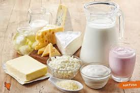
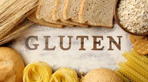
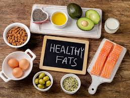
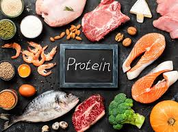
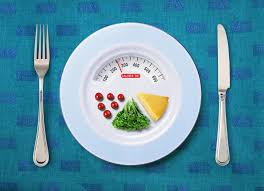
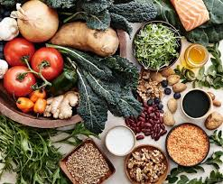
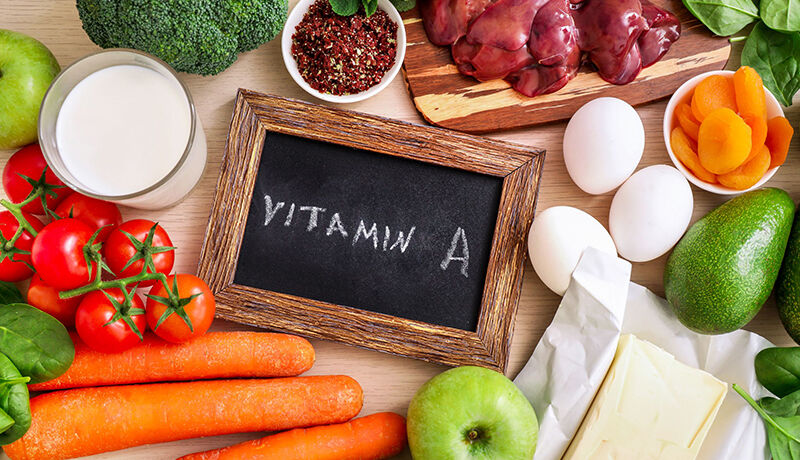
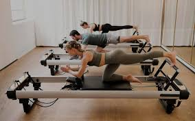

Сторінка ще на перекладі, перепрошуємо за незручності, очікуйте оновлення найближчим часом
Articles
Nutritional components
Lactose

1 - Article by Yevhen Klopotenko about lactose intolerance and lactose-free products
2 - Briefly and clearly. The main thing about lactose
Casein
1 - Casein - what is it, where is it found, intolerance and
treatment
2 - Casein: what is it, harm and benefits
Gluten
1 - What products contain gluten and how is it harmful to the body?
2 - Gluten: myths and reality
Veganism and vegan products
1 - Vegan diet: delicious variety of products
2 - Veganism: Principles and Health Benefits
Sugar substitutes and sugar
1 - Say no to sugar: a list of delicious sugar-free foods
2 - Natural sweeteners: why they are good for your health and how to use them correctly
Fats
1 - Choosing a healthy source of fat
2 - Healthy fats: what foods to eat and consumption rates
Carbohydrates
1 - Are carbohydrates good or bad? Dietary norms, benefits and harms to health
2 - What are carbohydrates and why are they needed?
Аlbumen
1 - Protein: functions, consumption rates. Protein in food
2 - Proteins: norm, properties, functions. Benefits and harms of protein supplements
Calories
1 - A guide to counting calories to reach your goals
2 - Everything you need to know about calories: from losing weight to maintaining weight
Cellulose
1 - Why you should eat fiber and where to find it
2 - What is fiber and how to increase it in your diet
Vitamins
Vitamin A
1 - Vitamin A: myths and facts
2 - Vitamin A is good for the body, but know the measure
Vitamin D

1 - Foods high in vitamin D
2 - Should you take vitamin D for prevention?
Vitamin Е

1 - Vitamin E: useful or harmful?
2 - Myths and truth about vitamin E
Vitamin K

1 - Vitamin K: where it is found and why it is necessary for our body
2 - Vitamin K
Vitamin B

1 - B vitamins - properties, role, deficiency and sources
2 - B vitamins: how to consume them correctly. Suprun explains
Vitamin deficiency

1 - Does the body lack vitamins? We tell you about the symptoms of their deficiency
2 - Vitamin Deficiency: Causes, Symptoms, How to Prevent and Treat Deficiency
Sport
Pilates
1 - Pilates: contraindications, benefits and features of training
2 - Pilates at home or in the gym: which is better for beginners?
Run
1 - Why running is good for you and won't kill your knees
2 - The benefits and harms of running
Yoga
1 - Yoga: who is this type of training suitable for?
2 - Scientifically proven: 10 benefits of yoga for health and well-being
Strength training

1 - Why strength training is the best thing you can do for your health and body
2 - Strength training: benefits for the body, health and youth
Boxing
1 - Women's boxing
2 - 5 reasons why you should start boxing
Cycling
1 - The benefits of cycling for women, men and during weight loss
2 - Benefits of cycling